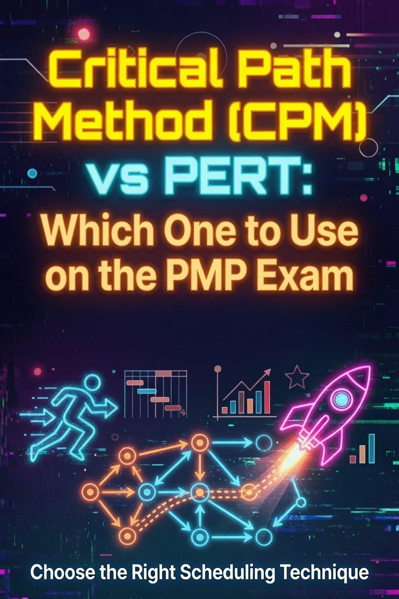

Critical Path Method (CPM) vs PERT: Which One to Use on the PMP Exam

Critical Path Method (CPM) and PERT both find the longest sequence of dependent activities in a schedule. They differ in how they estimate activity duration. CPM uses a single duration. PERT uses three estimates and averages them. The PMP exam expects you to know both, when each applies, and the formula PERT uses.
This post solves the same project both ways. You see the critical path calculation once with fixed durations, once with three-point estimates. Then you get the exam rules for choosing between them.
What Is the Critical Path?
The critical path is the longest path through a network diagram from start to finish. It determines the earliest the project can complete. Activities on the critical path have zero float, so any delay to one of them delays the whole project.
Every project has at least one critical path. Some have several. When multiple paths share the same total duration, each one is critical, and each one needs the same attention.
PMBOK 8 lists the critical path method among its scheduling methods alongside critical chain, location-based scheduling, Last Planner System, Gantt charts, and Kanban. The critical path method itself is the backbone of the network diagram questions you will face.
What Is CPM?
Critical Path Method treats each activity as a single, deterministic duration. You estimate one number per activity, build the network diagram, and run two passes to find the path.
The forward pass computes the Early Start (ES) and Early Finish (EF) for every activity. You move left to right. Each activity starts when its latest predecessor finishes.
- ES = the latest EF of all predecessors
- EF = ES + duration
The backward pass computes the Late Start (LS) and Late Finish (LF). You move right to left. Each activity finishes before its earliest successor must start.
- LF = the earliest LS of all successors
- LS = LF - duration
Float (also called slack) is the difference between the late and early values.
- Total float = LS - ES, or LF - EF
Activities with zero total float sit on the critical path. The path with the longest duration, and therefore the least float, is the critical path.
What Is PERT?
PERT, the Program Evaluation and Review Technique, handles uncertainty. Each activity gets three estimates instead of one: optimistic (tO), most likely (tM), and pessimistic (tP). The technique combines them into a single expected duration.
PMBOK 8 covers this as three-point estimating. The triangular distribution uses a straight average:
tE = (tO + tM + tP) / 3The PERT (beta) distribution weights the most likely estimate four times:
tE = (tO + 4tM + tP) / 6Use the triangular average when you lack historical data and the estimate is a guess. Use the PERT weighted average when you want the most likely value to dominate the result. The exam states the distribution, and the distribution dictates the formula.
Same Project, Solved Both Ways
Consider a small project with four activities.
| Activity | Predecessor | Optimistic (tO) | Most Likely (tM) | Pessimistic (tP) |
|---|---|---|---|---|
| A | None | 2 | 3 | 4 |
| B | None | 3 | 5 | 7 |
| C | A | 4 | 6 | 8 |
| D | B | 2 | 4 | 6 |
CPM with Most Likely Durations
Use the most likely durations as the single CPM estimate: A = 3, B = 5, C = 6, D = 4.
Path A-C runs 3 + 6 = 9. Path B-D runs 5 + 4 = 9. Both paths total 9, so both are critical. The project finishes no earlier than day 9. Any delay to A, B, C, or D pushes the completion date.
If you added a third path at 8 days, it would hold one day of float. That path is non-critical, and a one-day slip on it would not move the project end date.
PERT with Three-Point Estimates
Compute the expected duration for each activity using the beta formula.
- A: (2 + 4(3) + 4) / 6 = (2 + 12 + 4) / 6 = 18 / 6 = 3
- B: (3 + 4(5) + 7) / 6 = (3 + 20 + 7) / 6 = 30 / 6 = 5
- C: (4 + 4(6) + 8) / 6 = (4 + 24 + 8) / 6 = 36 / 6 = 6
- D: (2 + 4(4) + 6) / 6 = (2 + 16 + 6) / 6 = 24 / 6 = 4
The expected durations match the most likely values, so the paths stay at 9 days each. That symmetry is a coincidence of the example. When the distribution skews, the expected duration shifts away from the most likely value, and the critical path can change.
CPM vs PERT: Key Differences
| Dimension | CPM | PERT |
|---|---|---|
| Duration estimate | Single, deterministic | Three-point (optimistic, most likely, pessimistic) |
| Uncertainty handling | None built in | Explicit, probabilistic |
| Formula | None required | tE = (tO + 4tM + tP) / 6, or triangular tE = (tO + tM + tP) / 3 |
| Best used when | Durations are known and stable | Durations are uncertain, first-time work, research tasks |
| Critical path | Longest path by fixed durations | Longest path by expected durations |
CPM suits repetitive work where you have history. PERT suits novel work where estimates carry wide ranges. The exam picks the technique from the scenario, not from your preference.
When to Use Each on the Exam
The exam frames the choice with context clues.
- Use CPM when the question gives one duration per activity and asks for the critical path, float, or the impact of delaying an activity.
- Use PERT when the question gives three values per activity and asks for the expected duration, or when it mentions uncertain, research, or first-time work.
- Use float formulas when the question names early and late dates and asks how much an activity can slip.
A question that asks "how much delay can this activity absorb before the project slips?" is asking for total float. Compute LS - ES (or LF - EF). A zero answer means the activity sits on the critical path.
Critical Chain: The Related Method
PMBOK 8 groups critical chain method (CCPM) with CPM because both rest on critical path analysis. CCPM adds buffers. It removes safety from individual tasks, pools that safety into a project buffer, and protects the critical chain from variation.
The exam compares CPM and CCPM in one common way: CPM manages float on individual activities, CCPM manages buffers on the chain. A question about feeding buffers and project buffers points at critical chain, not CPM.
This distinction pairs with the burnup vs burndown post for schedule-tracking questions. Those charts show progress against the plan. The critical path explains why the plan holds the duration it does.
PMP Exam Traps
- Beta vs triangular. The formula changes with the distribution. Beta weights tM four times. Triangular averages all three.
- Float on the critical path. Critical path activities have zero total float. A question that asks for float on a critical activity expects zero.
- Delays off the path. A delay to a non-critical activity only matters once it consumes the float. Compute the float before assuming the project slips.
- Multiple critical paths. When two paths share the longest duration, both are critical. The exam tests this directly.
- PERT is an estimating technique. PMBOK 8 lists PERT among estimating tools. Questions asking which technique to use for uncertain work expect PERT or three-point estimating as the answer.
Frequently Asked Questions
Is PERT the same as the critical path method? No. PERT is an estimating technique that produces expected durations. CPM is a scheduling method that finds the longest path. You can run a critical path analysis on PERT-derived durations, which is how the two combine.
What is the PERT formula? The beta distribution uses tE = (tO + 4tM + tP) / 6. The triangular distribution uses tE = (tO + tM + tP) / 3.
How do I find the critical path? Run the forward pass to get early dates, the backward pass to get late dates, and identify activities with zero total float. The path connecting them is critical.
Can a project have more than one critical path? Yes. Any path whose total duration equals the longest duration is critical.
Does the PMP exam test PERT calculations? Yes. Three-point estimating appears in the Schedule performance domain, and calculation questions with the beta formula are common.
Last updated: August 2, 2026
Want the full study system? The PMP Exam Cracker delivers 64 pages of compressed study guide, 80 practice questions, and an annotated answer key, built for the 8th Edition exam. Pair it with the PMP Charts & Data Visualizations Study Guide for the network diagram and schedule visuals.